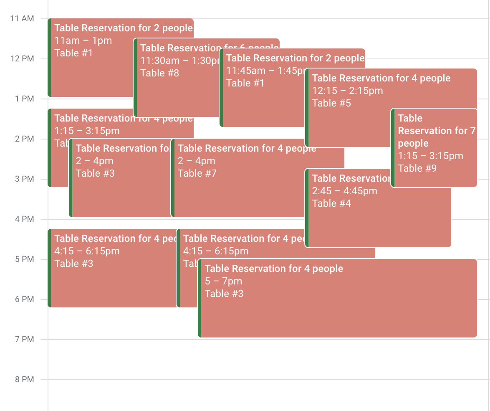
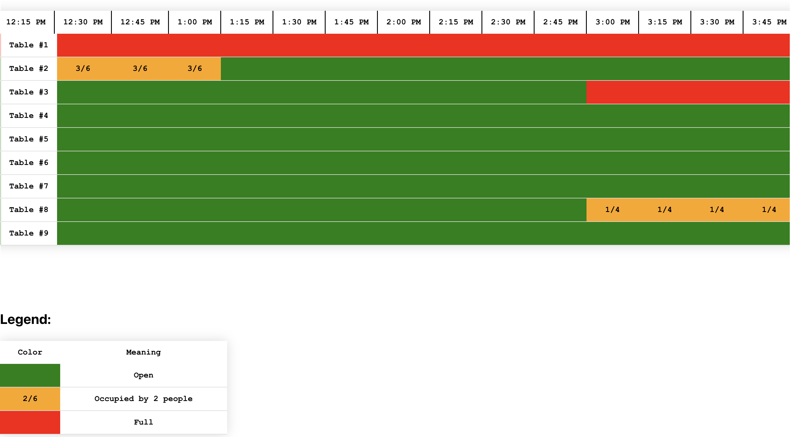

projects
Projects
Cafe Monet Reservation Display App
I created this app to solve an issue with reading the reservation schedule for in-store employees.
The Problem
The reservations made through the store's website were visible via Google calendar only or the back end portal of the store's website. Since most employees already knew the format of Google Calendar, it became the sole way of observing the state of all the store's table at any given time. When a guest makes a reservation through the website, it is processed by some backend logic unaccessable to the front of house staff, and then the Date, Time, Number of People, and Table Number are made into a Google Calendar event which is exported to the store's gmail account. Unfortunately, Google Calendar only organizes events by time. This caused issues when front of house staff needed to quickly assess which tables were taken, for how long, and if they were actually full (anytime a walk in is seated, a Google Calendar event is necessary to track the seating. Sometimes a table will be made into a community table to handle a high volume of walk-ins).
Exhibit A: 
This is hard to read, plan and simple. The staff would have to click on multiple events to reveal which table was taken (since the table number was displayed in the Google Calendar event's location field). Additionally, there was no visual organization for the table numbers. This caused delays in seating, greeting, and performing front of house duties.
The Solution:
A display format that organizes reservations by time and table number. The display would also enable users to quickly see if a table was fully occupied, and for how long.
Exhibit B: Here we see a table where the rows are tables numbered 1 through 9, and the columns are 15 minute intervals throughout opening hours. Each cell is colored green, orange, or red. Green cells indicate that the table is not reserved at that time. Orange cells indiciate that the table is partially occupied at that time and contains the occupancy of that table. Red cells indicate that the table is fully reserved at that time.
Additionally, the app refreshes the calendar data every 10 minutes to ensure it has the most up-to-date events, in case new reservations or other guests have been added.
StackThe web app is built with React and hosted through Vercel. I have continious deployment setup to deploy a new websit everytime a commit is pushed to the github repository. Since this app uses the Google Calendar API, it was difficult to test. To authenticate with Google API using OAuth 2.0 there needs to be callbacks back to your app. Since I amn independent I opted to test the project locally or the most recent deployment, since no one was using production yet. Unfortunately, when testing locally the URL is 'localhost:3000', which Google does recognize as a valid callback URL for OAuth 2.0. Thus, I was stuck with testing any API functionality with the production app instead of local testing, which made testing very difficult... If I were to do this project again, I would ensure I knew what the most efficient method of testing would be before starting development...